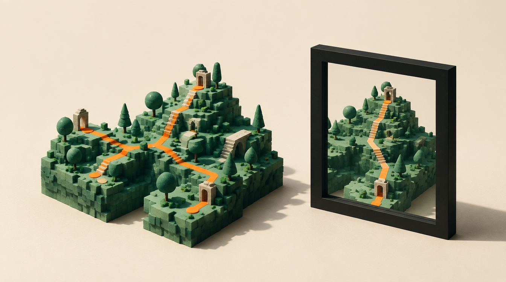

CTIN 290 / September 30, 2026 / Student field guide / 01
From watching
to making.
What should a player feel?
What will they do?

Three questions. Evidence first.
What survived?
Name what carries across. Point to evidence.
What was reinvented?
What changes when the medium changes?
What is gone?
What disappears—and is its absence felt?
Minecraft · 10:05–10:45. Recall a choice that made a build yours. Watch Steve’s film prologue once. Write your reading before hearing 61 seconds of the filmmakers. Does the film preserve a feeling of Minecraft? Use a specific moment.
The Last of Us · 10:45–11:20. Watch S1E1’s cold open once. Name a detail that shapes your expectation. Then hear 2:14 of its creators explaining their decision. Game comparisons need specific recall; no game footage is assigned.
Our player feels __ because they __.
The reference helps us decide __.
Minecraft includes mild fantasy peril; The Last of Us discusses pandemics. You may look away or step out. No student subscription needed.
CTIN 290 / Student field guide / 02
The board is the work.
01 / Choose
Name one highest-priority change.
02 / Build
55 protected minutes in your real shared board. Professor circulates.
03 / Check
Partner team or your own team. Use the four rubric criteria.
04 / Save
Revise. Save the actual file. Record tonight’s one action.
A reference earns its place. It helps decide movement, light, legibility, or what a player does. Add what is missing. Replace what you cannot justify. A strong board may need testing, not more images.
Four rubric lenses · 5 points each
Cohesion
One aesthetic direction, clear to a stranger.
Curation
Every image earns its place. 20–40 in the finished board.
Palette
Test the colors on a real screen.
Presentation
Readable, navigable, and ready to explain.
Save and submit the actual file to the course Drive.
Everyone speaks. No new homework; the board is the work.
12:45 exit: one term and where you saw it; one uncertainty.
Notes save in your browser; download before leaving. Save the actual board in your team’s shared file. Course version 2c85f18df075c130